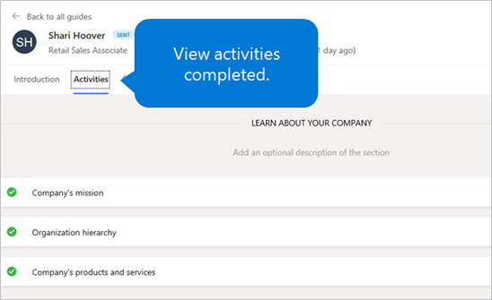

View the status of onboarding employees and your tasks
Important
Dynamics 365 Talent: Attract and Onboard apps are being retired. Learn more at Retiring Dynamics 365 Talent: Attract and Onboard apps.
Microsoft Dynamics 365 Talent: Onboard lets you view the progress that your new hires are making in their onboarding activities. You can also view any tasks that have been assigned to you from onboarding guides.
View the status of onboarding employees
On the left menu, select Guides. You see an overview of the progress for all the onboarding guides that you've sent.

To drill down, select the guide that you want to view.
Select the Activities tab to see which activities your new hire has completed.

View onboarding tasks that are assigned to you
- On the left menu, select Tasks. You see an overview of all the onboarding tasks that have been assigned to you from the onboarding guides that were sent to employees.
- To drill down, select the desired task.
- Follow up with the new hire as required.
- When you've completed the task, mark it as completed by adding a check mark to the circle.